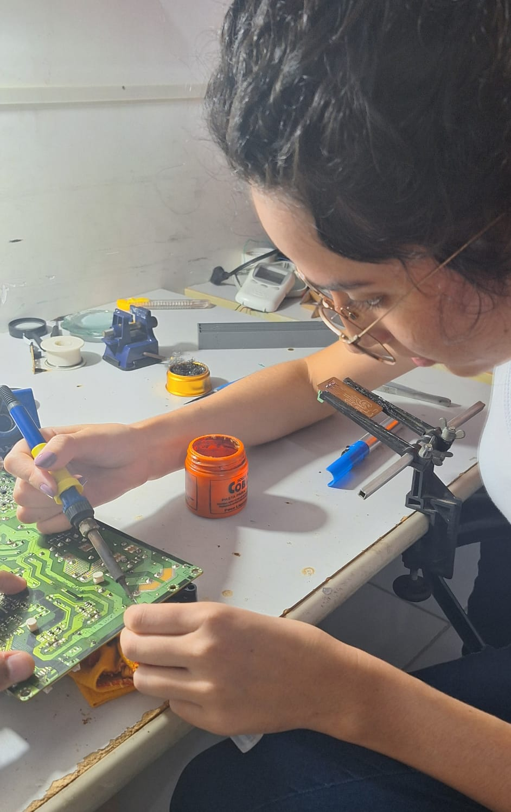

Chapter 6 Soldagem
6.1 Teoria
A soldagem é um etapa crucial tanto no processo de montagem de um circuito impresso quanto na união de outros componentes que se deseja ter uma determinada condução entre eles. De maneira geral, a soldagem é uma técnica de unir materias a partir do derretimento de um material de preenchimento conhecido comumente como solda.
No dia 13 de maio de 2024, o discente Ryan Sousa membro efetivo do FABLAB apresentou com mais detalhes o processo de soldagem. Segundo ele os equipamentos básicos que necessita-se para realizar este procedimento é um ferro de solda, solda que no caso é o estanho e uma substância química chamada de fluxo de solda que facilita a fusão da solda com os componentes além de previnir a oxidação dos mesmos.
6.2 Prática
Em um exercicio prático de soldagem, a partir da presença de uma estação de soldagem continha tanto um ferro de soldar como um soprador térmico foi realizado o processo de retirada e soldagem de componenetes eletônicos de uma placa de circuito impresso como observa-se na Figura (14).
A remoção dos componentes da PCI baseava-se em aproximar com o sobrador térmico configurado com uma determinada temperatura de forma a derreter o estâneo presente na placa e com o auxilio de um sugador e o ferro de solda ser feita a retirada do componente. Já o processo de soldagem partia-se da limpeza da placa com álcool isopropílico, da aplicação do fluxo de solda tanto na placa como nas pernas do componentes e posteriormente com o estâneo e o ferro em mãos era realizado a soldagem do componente na placa.